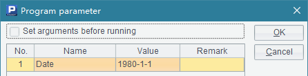
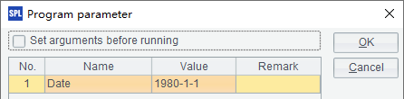

6.2.2 Calling different cellset files
Basic method of Java invocation explained how to call a cellset file in a Java program. But what will you do with different cellset files? Take the following cellset file – createTable2.splx – as an example:
|
|
A |
B |
|
1 |
=connect("demo") |
|
|
2 |
=A1.query("select * from EMPLOYEE") |
=A2.select(month(BIRTHDAY)==month(Date)&&day(BIRTHDAY)==day(Date)) |
|
3 |
>A1.close() |
|
|
4 |
if B2.len()>1 |
return B2.new(EID,NAME+ " "+ SURNAME:NAME, GENDER, BIRTHDAY) |
|
5 |
else |
return "None" |
This cellset file obtains data the demo source and uses a date type parameter Date:

The demo data source used in the cellset needs to be configured in the raqsoftConfig.xml file. For detailed method, refer to Deploying JDBC for details. The data source connection established in a cellset should be closed using db.close() function after it accomplishes its mission.
For a call of the file from Java, the code for establishing a connection and outputting the result is the same as in the previous example. The difference lies in the method of calling the file:
// call the stored procedure; createTable2 is the name of the script file and ? represents a parameter
st =con.prepareCall("call createTable2(?)");
// set the parameter
java.util.Calendar calendar = java.util.Calendar.getInstance();
calendar.set(1980, 0, 4);
st.setObject(1, calendar.getTime());
// execute the stored procedure
st.execute();
// get the result set
ResultSet rs = st.getResultSet();
This cellset file uses a parameter. So, to call the cellset, use "call createTable2(?)", where ? represents the parameter to be get assigned. In this case, method st.setObject() should be used to pass in value of the parameter. With multiple parameters, values are assigned in order, and the input values are not related to names of the cellset parameters. We can also set value for a specified parameter. To do this, we can modify the above statement as st.setObject("Date", calendar.getTime()). This cellset file will list employees whose birthdays are on the day specified by the parameter. Note that the month starts with 0 when we set the date in the Calendar class. The print out result is as follows:

During parameter setting, the parameter object can be directly entered according to the type; but the date type parameter can be entered in the form of a string, which esProc will automatically parse:
//set the parameter
st.setObject(1, "1980-1-4");
Note that the format of the string entered should be in consistent with the date format set in the raqsoftConfig.xml file. After the program is executed, the result is the same as that of the previous example. You can also use a parameter with actual value in the statement. For example:
// call the stored procedure; createTable2 is the name of the script file and the parameter in the statement is an actual value
st =con.prepareCall("call createTable2(\"1980-1-8")");
// execute the stored procedure
st.execute();
// get the result set
ResultSet rs = st.getResultSet();
With this calling method, the parameter object cannot be set according to the data type; it can only use either the numerical type or the string type which will be parsed automatically by esProc. After the above code is executed, the result is as follows:

Since no employees were born on January 8, B5 returns a string – None – using return statement. As can be seen from the above result, column name will be automatically generated for the result set, making it a standard ResultSet for returning, even if the data returned from the cellset is a single value.